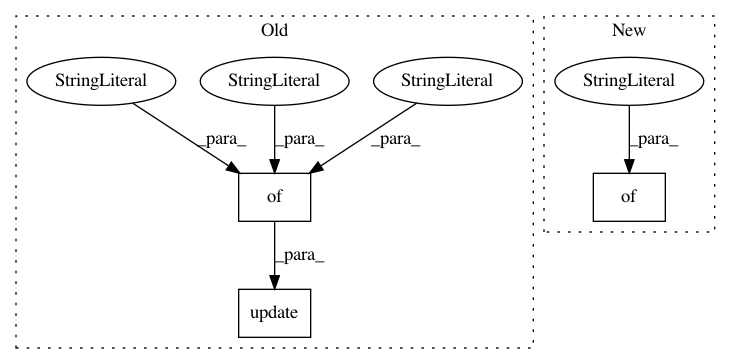

7dcdaf7091798a01341d7b94de0880f8e535608e,service/server.py,BertServer,__init__,#BertServer#Any#,27
Before Change
self.port = args.port
self.args = args
self.args_dict = dict(args._asdict()) if isinstance(args, tuple) else vars(args)
self.args_dict.update({
"tensorflow_version": tf.__version__,
"python_version": sys.version,
"server_start": str(datetime.now())
})
self.processes = []
self.context = zmq.Context()
// frontend facing client
After Change
self.max_batch_size = args.max_batch_size
self.port = args.port
self.args = args
self.args_dict = {
"model_dir": args.model_dir,
"max_seq_len": args.max_seq_len,
"num_worker": args.num_worker,
"max_batch_size": args.max_batch_size,
"port": args.port,
"port_out": args.port_out,
"pooling_layer": args.pooling_layer,
"pooling_strategy": args.pooling_strategy,
"tensorflow_version": tf.__version__,
"python_version": sys.version,
"server_start": str(datetime.now())
}
self.processes = []
self.context = zmq.Context()
// frontend facing client
In pattern: SUPERPATTERN
Frequency: 3
Non-data size: 3
Instances
Project Name: hanxiao/bert-as-service
Commit Name: 7dcdaf7091798a01341d7b94de0880f8e535608e
Time: 2018-11-26
Author: hanhxiao@tencent.com
File Name: service/server.py
Class Name: BertServer
Method Name: __init__
Project Name: keras-team/autokeras
Commit Name: cdbb8791ec13d03fd1fcf2580111db677a3ebc29
Time: 2019-12-15
Author: jhfjhfj1@gmail.com
File Name: autokeras/hypermodel/hyperblock.py
Class Name: StructuredDataBlock
Method Name: get_state
Project Name: keras-team/autokeras
Commit Name: cdbb8791ec13d03fd1fcf2580111db677a3ebc29
Time: 2019-12-15
Author: jhfjhfj1@gmail.com
File Name: autokeras/hypermodel/head.py
Class Name: ClassificationHead
Method Name: get_state